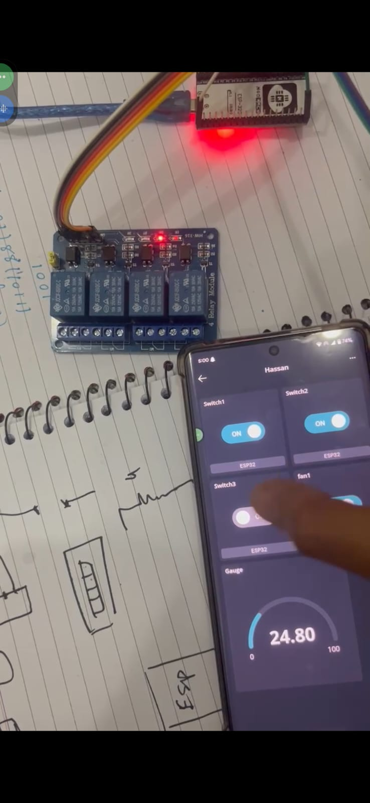
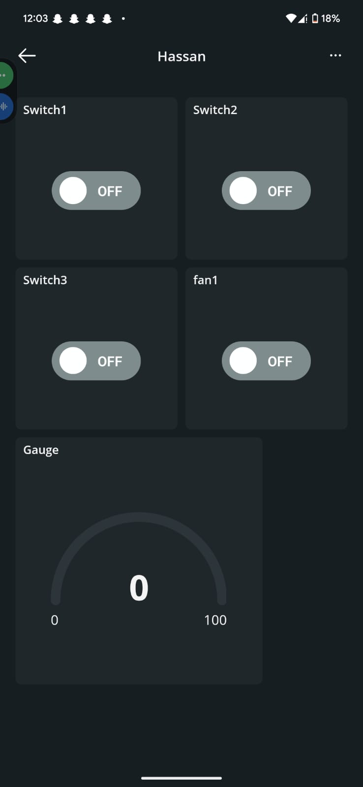
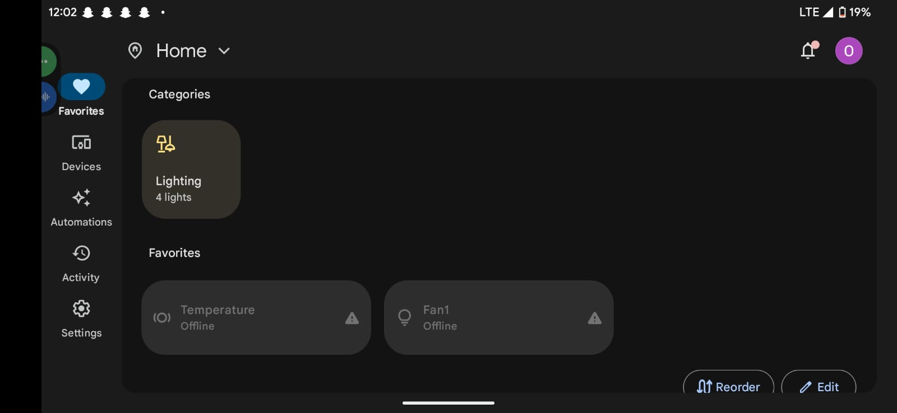
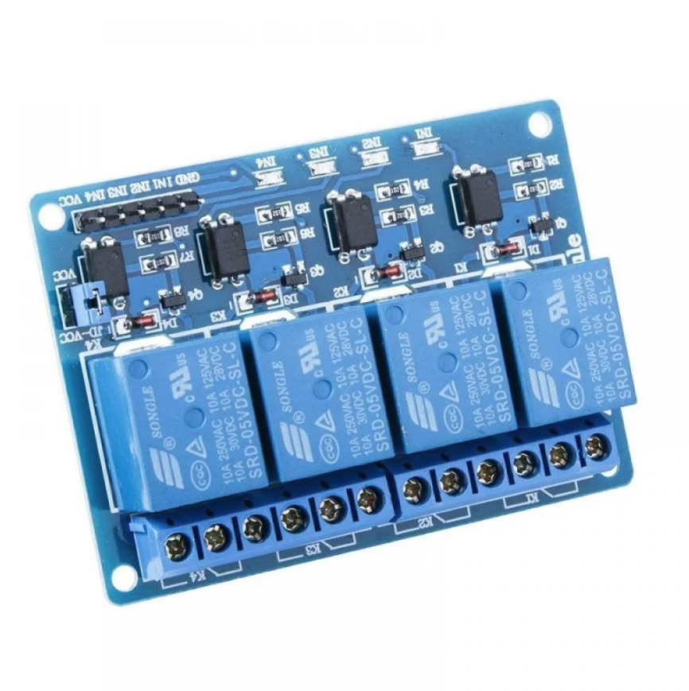

Smart Home Device ESP32
View Code ↗I developed a Smart Home Device using an ESP32 microcontroller, leveraging the Arduino framework and PlatformIO for a robust home automation solution. This project integrates a 4-channel relay module to control household appliances, connects to the Arduino IoT Cloud for remote monitoring, and links with Google Home for voice control. I also added temperature reading functionality using a sensor, enhancing the device’s utility for smart home environments.
Project Overview
The Smart Home Device aims to automate and monitor home appliances efficiently. I used the ESP32 for its Wi-Fi capabilities and dual-core processing power, programmed with the Arduino framework within the PlatformIO IDE for seamless development. The 4-channel relay module allows control of up to four devices, such as lights or fans, while the Arduino IoT Cloud provides a dashboard for real-time status updates. Integration with Google Home enables voice commands like “Turn on the living room light,” making it user-friendly. Additionally, I incorporated a DHT11 sensor to monitor temperature, adding environmental awareness to the system.
This project showcases my ability to blend hardware and IoT technologies, creating a practical solution for modern homes. The code and design are documented for future enhancements.
Hardware and Setup
The setup revolves around the ESP32, which interfaces with a 4-channel relay module to switch devices on or off via GPIO pins (e.g., GPIO 13, 12, 14, 27). I connected a DHT11 temperature sensor to GPIO 4 for reading ambient temperature and humidity. Power is supplied via a 5V adapter, with the relay module handling the high-voltage switching (up to 250V AC). The circuit was designed with proper isolation to ensure safety, using optocouplers within the relay module.
This circuit diagram illustrates the connections between the ESP32, relay module, and DHT11 sensor, ensuring a stable and reliable setup.
Software and Integration
I developed the firmware using the Arduino framework in PlatformIO, which simplified the coding process with its extensive library support. The ESP32 connects to the Arduino IoT Cloud via Wi-Fi, where I set up variables to control the relay channels and display temperature readings. Google Home integration was achieved using the Google Home app, linking the device through the Arduino IoT Cloud’s “Thing” configuration.
This screenshot shows the Arduino IoT Cloud dashboard, where I can toggle relays and view temperature data remotely.
This image captures the Google Home app, demonstrating voice control of the smart home devices.
This photo highlights the 4-channel relay module, showing its compact design and connection points for controlling multiple appliances.
Temperature Reading Functionality
I added temperature monitoring using the DHT11 sensor, which provides readings every 2 seconds. The data is processed on the ESP32 and sent to the Arduino IoT Cloud, where it’s displayed alongside relay statuses. I implemented a simple threshold alert: if the temperature exceeds 30°C, a notification is pushed to the cloud, and a specific relay (e.g., a fan) can be triggered automatically.
Testing and Validation
I tested the system extensively to ensure reliability:
- Relay Control: Verified all four channels could switch a 220V lamp on and off via the cloud and voice commands, with no latency.
- Temperature Accuracy: Compared DHT11 readings with a commercial thermometer, achieving ±1°C accuracy.
- Connectivity: Confirmed stable Wi-Fi connection and cloud sync over 24 hours, with automatic reconnection after power loss.
- Voice Integration: Tested Google Home commands like “Turn on bedroom light,” ensuring correct relay activation.
The device performed flawlessly, providing a seamless smart home experience. I used it at home for a week, controlling lights and monitoring temperature, which validated its practical utility.
Technical Features
- ESP32 with Arduino framework and PlatformIO for development.
- 4-channel relay module for controlling up to four appliances.
- Arduino IoT Cloud integration for remote monitoring and control.
- Google Home compatibility for voice-activated control.
- DHT11 sensor for temperature and humidity readings with alerts.
- Safe circuit design with optocoupler isolation.
This Smart Home Device project, completed as of June 02, 2025, demonstrates my proficiency in IoT development and hardware integration. From designing the circuit to enabling voice control, I enjoyed exploring the intersection of embedded systems and smart technology. It’s a functional prototype I continue to refine, with plans to add more sensors and automation features.